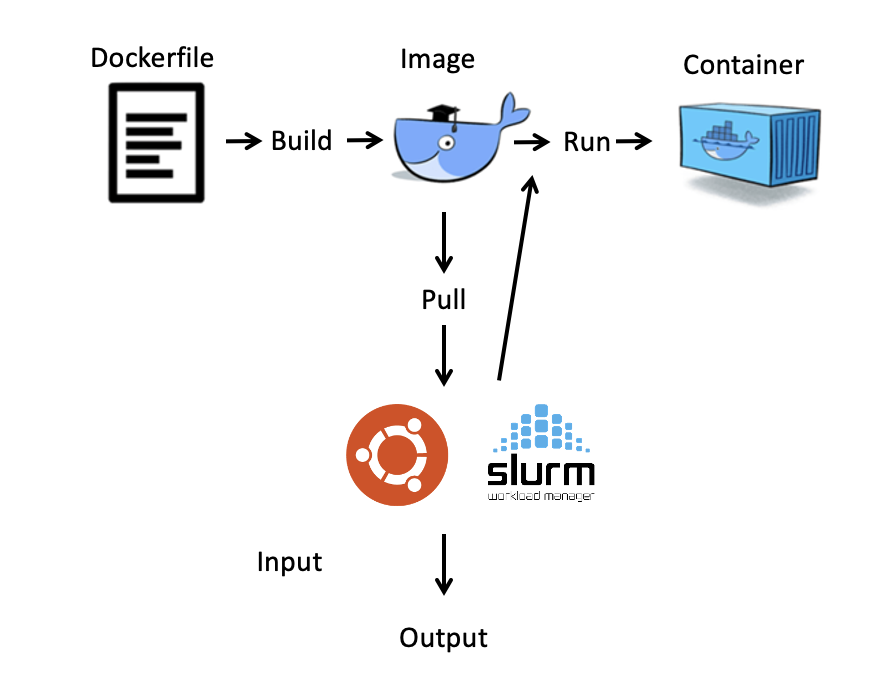
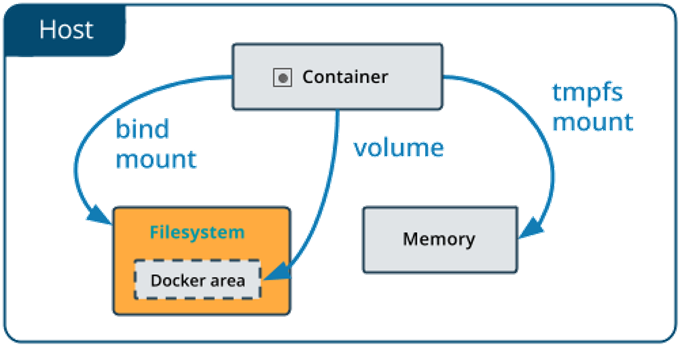

docker使用
mac上也要开始使用docker啦，docker的设计也太可爱了吧，贴贴。 Windows用Ubuntu虚拟机的安装见之前的博文docker安装(21-02-03)，转眼已经10个月了嘛。
首先，注意到官网下载，注意不要选错芯片嗷，不然可能出现如下报错（仿佛暴露了什么……）。
1 | Fatal Error: com.docker.osx.hyperkit.linux failed to start |
安装完成了以后，其实直接在terminal就可以使用命令行啦，但是还可以使用docker桌面版，像极了GitHub有木有。Docker Dashboard可以快速访问容器日志，在容器中获得shell，并轻松管理容器生命周期(停止、删除等)。
我们尝试运行一个容器：
1 | docker run -d -p 80:80 docker/getting-started |
其中，
-d表示背景中运行容器（detached mode）-p 80:80表示将主机的80端口映射到容器中的80端口docker/getting-started表示使用的镜像
容器
容器是机器上的一个sandboxed进程，它与主机上的所有其他进程隔离。这种隔离利用了kernel namespace和cgroup，这些特性在Linux中已经存在很长时间了。
总之，一个容器：
- 是映像的可运行实例。可以使用DockerAPI或CLI创建、启动、停止、移动或删除容器。
- 可以运行在本地机器、虚拟机或部署到云上。
- 便携（可以在任何OS上运行）。
- 容器彼此隔离，并运行自己的软件、二进制文件和配置。
容器镜像
运行容器时，它使用隔离的文件系统。此自定义文件系统由容器镜像提供。由于镜像包含容器的文件系统，它必须包含运行应用程序所需的一切——所有依赖项、配置、脚本、二进制文件等。镜像还包含容器的其他配置，例如环境变量、要运行的默认命令、和其他元数据。

其它一些基础操作，见Building Containers(20-02-14)
路径挂载
默认情况下，在容器内创建的所有文件都存储在可写容器层上。 这意味着当该容器不再存在时数据不会持久化。

volume：存储在由 Docker 管理的主机文件系统的一部分中（Linux 上为 /var/lib/docker/volumes/）。非 Docker 进程不应修改文件系统的这一部分。Volume 是在 Docker 中持久化数据的最佳方式。bind mount：存储在主机系统的任何位置。它们甚至可能是重要的系统文件或目录。Docker 主机或 Docker 容器上的非 Docker 进程可以随时修改它们。链接主机系统和容器，用于容器在宿主机中存储文件，以便容器停止后文件仍然存在，用户可以使用结果。tmpfs：存储在主机系统的内存中，永远不会写入主机系统的文件系统。
但正如之前博文的操作，docker创建镜像，但是使用singularity pull和run。这是因为docker要求使用sudo，sudo是类unix计算机操作系统的一个程序，它允许用户以超级用户的安全权限运行程序。所以对于大多数用户来说，采用Singularity更加现实，它的挂载使用-B。